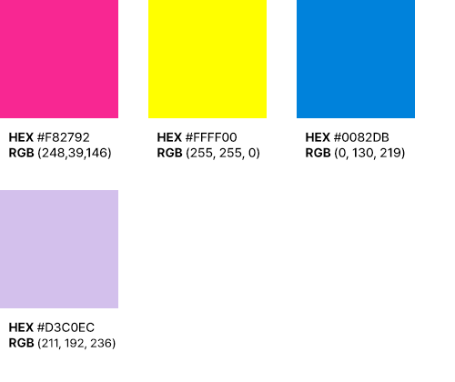

Bank Salad
OVERVIEW
뱅크샐러드는 데이터 기반 자산관리 앱 플랫폼 입니다.목표는 젊은층들에게 지루해보일 수 있는 금융 매거진 사이트의 시각 디자인을 세련되고 감각적으로 꾸며 이용자들의 흥미를 일으키는 것이었습니다.
ROLES
반응형 웹 UI 디자인 시각 디자인, 와이어 프레임 및 반응형 프로토 타입 제작
기간
2021년 1월 17일 - 1월 29일
PROBLEM
젊은층들에게 대다수의 금융 매거진 사이트는 정적이고 낯설며 흥미롭지가 않습니다. 핵심 타켓인 젊은층들을 유입시키기 위해서 시각적으로도 흥미를 일으키기 위한 디자인이 필요하다고 판단했습니다.
SOLUTION
각 금융 기사와 관련이 있는 다양한 이미지와 일러스트를 사용해 기사의 흥미도를 높이기 위해 유도했습니다. 자사의 핵심 서비스 중 하나인 '나의 BEST 카드 찾기'를 메인 메뉴로 이동시키고 '맞춤 카드 추천'으로 다시 라벨링하여 접근성을 높이고자 했습니다.
USERS
20대 이상 재테크와 금융 상품에 관심이 많은 젊은층
KEY FEATURES
- ‘나의 BEST 카드 찾기'를 메인 메뉴로 이동시키고, '나의 맞춤 카드 찾기'로 다시 라벨링 하여 접근성을 높임.
- 기존에 연관 기사와 광고들로 복잡했던 페이지를 깔끔하게 정리하고 사용자가 읽기 편리하도록 다시 디자인함.
COLOR PALETTE
어두운 배경색 안에서 텍스트와 그림은 이와 상반되는 밝은색과 형광색 등을 사용하여 금융 매거진이지만 흡사 한 권의 예술 매거진 같은 느낌을 들게 하여 젊은층의 흥미를 일으키고자 유도했습니다.
PRIMARY COLOR
ACTION COLOR
TYPOGRAPHY
Noto Sans KR
*이미지 클릭 시 해당 사이트로 이동합니다.

LEARN
본 포토폴리오는 학원에서 배운 내용을 토대로 기술을 응용하기 위해 다른 디자이너들의 작품에 영감을 받아서 시작했습니다. 하지만 User Experience에 대해서 공부를 하기 시작하면서 파악한 제 포토폴리오의 문제점은 다음과 같았습니다.
- 사용자 연구가 제대로 이루어지지 않았습니다. (User Interview, Define user problem 등)
- 시각 디자인은 시력적으로 불편하거나 색맹을 갖고 있는 이용자에게 유용하지 않습니다.
- 국내에 살고 있는 외국인을 위한 번역 기능이 마련되어 있지 않습니다.
- 그 밖에 부족한 점들이 많은 포토폴리오 입니다.
접근성(Accessibility)에 대한 이해가 부족한 상태에서 시작하여 가장 중요한 부분인 사용자 연구에 많은 시간을 할애하지 못하고 시작했습니다. 선택했던 컬러가 색맹이나 시력적으로 불편한 사람들을 고려하지 못했기 때문에 좌절감을 줄 수 있다는 것을 깨달았습니다. 이 경험 뒤로 UX분야에 대한 지식을 확장하고자 온라인 강의를 듣게 되었습니다. 향후 업로드할 포토폴리오에서는 깊은 사용자 연구를 통해 문제를 식별해서 접근성 있고 이용자가 사용하기 편리한 디자인을 설계할 예정입니다. 그 밖에 제 포토폴리오에 대해서 조언이나 하시고 싶은 말씀이 있으시다면 제 이메일로 연락을 주시면 감사하겠습니다. 시간을 내주시고 제 사이트를 방문해 주셔서 감사합니다.